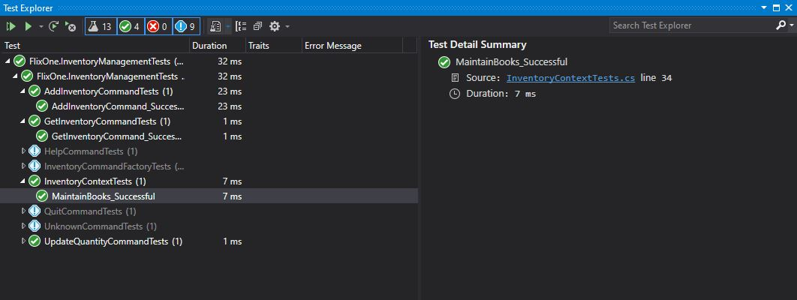
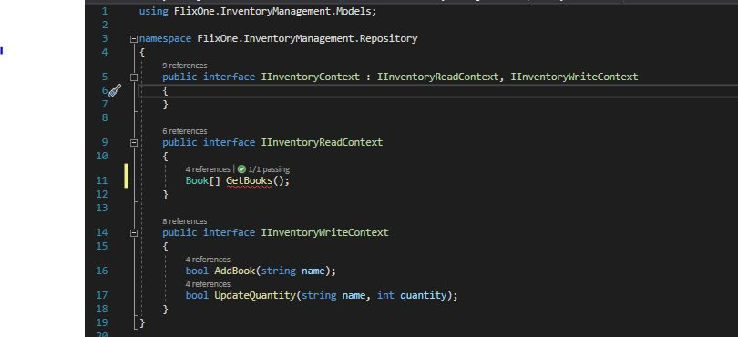
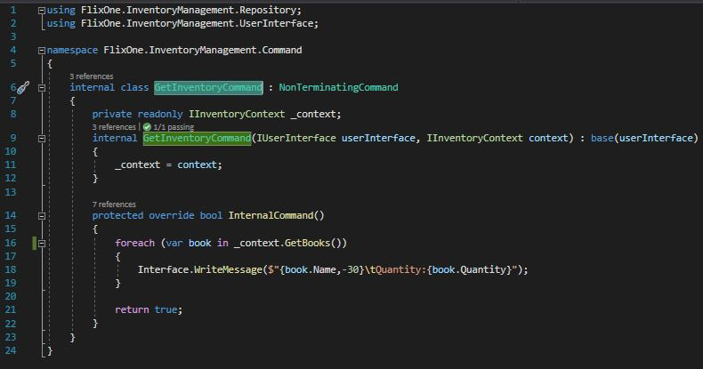
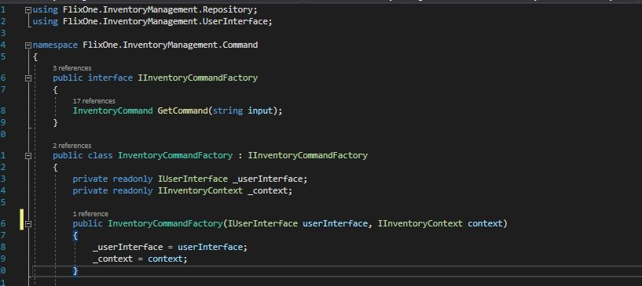
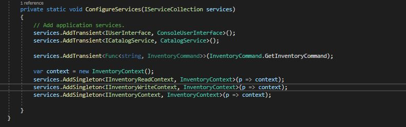
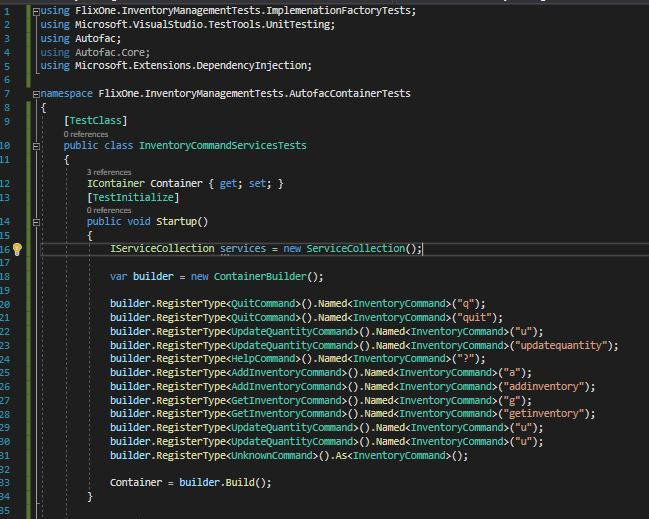

Implementing Design Patterns - .NET Core
The previous chapter continued the building of the FlixOne inventory management application by incorporating additional patterns. More of the Gang of Four patterns were used, including the Singleton and Factory patterns. The Singleton pattern was used to illustrate the Repository pattern that was used to maintain the FlixOne collection of books. The Factory pattern was used to further explore the dependency injection (DI). The .Net Core framework was used to complete the initial inventory management console application, in order to facilitate an inversion of control (IoC) container.
This chapter will continue building upon the inventory management console application, while also exploring features of .Net Core. The Singleton pattern, which was covered in the previous chapter, will be revisited and created, using the Singleton service lifetime built into the .Net Core framework. Using the framework’s DI, the Configuration pattern will be shown, as well as constructor injection (CI) explained, using different examples.
The following topics will be covered in this chapter:
- .Net Core service lifetimes
- Implementation factory
.Net Core service lifetimes
A fundamental concept to understand when working with .Net Core’s DI, is service lifetimes. A service lifetime defines how a dependency is managed in regards to how often it is created. As an illustration of this process, think of DI as managing a container of dependencies. Dependency is just a class that the DI knows about, because the class was registered with it. For .Net Core’s DI, this is done with the following three methods of IServiceCollection:
AddTransient<TService, TImplementation>()AddScoped<TService, TImplementation>()AddSingleton<TService, TImplementation>()
The IServiceCollection interface is a collection of registered service descriptions, basically containing
the dependency, and when the DI should supply the dependency. For example, when TService is
requested, TImplementation is supplied (that is, injected).
In this section, we will look at the three service lifetimes, and provide an illustration of the different lifetimes via unit tests. We will also look at how implementation factories can be used to create instances of the dependencies.
Transient
A transient dependency means each time the DI receives a request for a dependency, then a new
instance of the dependency will be created. In most situations, this is the service lifetime that makes
the most sense to use, as most classes should be designed to be lightweight, stateless services. In
situations where the state needs to be persisted between references and/or if there is considerable
effort in instantiating a new instance, then another service lifetime might make more sense.
Singleton
In .Net Core, the Singleton pattern is implemented so that dependency is only ever instantiated once,
just like the Singleton pattern that was implemented in the previous chapter. Similar to the Singleton
pattern in the previous chapter, the singleton class needs to be thread safe, and only the factory method
that is used to create the singleton class is guaranteed to be called only once by a single thread.
Unit tests
Our unit test now passes successfully, as only one instance of the InventoryContext class is created during the execution of the test: 
The Singleton pattern is relatively easy to implement using the built-in DI, as illustrated in this section. Understanding when to use the pattern is an important concept. The next section will explore the concept of scope in more detail, in order to gain a further understanding of service lifetimes.
IInventoryContext.cs

GetInventoryCommand.cs

InventoryCommandFactory.cs

Program.cs

InventoryCommand
InventoryCommandFactory was useful to illustrate how the Factory pattern could be achieved using .Net, but
let’s revisit this now that we are using the .Net Core framework. Our requirement is given a string
value; we want to return a particular implementation of InventoryCommand. This can be achieved in
several ways, and, in this section, three examples will be given:
- Implementation factory using a function
- Using services
- Using third-party containers
InventoryCommandServicesTests.cs

Summary
The goal of this chapter was to explore the .Net Core framework in more detail, and, in particular, the .Net Core DI. Three types of service lifetimes are supported: Transient, Scoped, and Singleton. A Transient service will create a new instance of a registered dependency for each request. A Scoped service will be generated once with a defined scope, while a Singleton service will be performed once for the lifetime of the DI service collection.
As the .Net Core DI is central to confidently building .Net Core applications, it is important to understand its capabilities and its limitations. It is important to use the DI effectively, as well as to avoid duplicating functionality that is already supplied. Just as crucial, it is also wise to know the limits of the .Net Core DI framework, as well as the strengths of other DI frameworks, for situations where replacing the basic .Net Core DI framework with a third-party DI framework could be beneficial for an application.
The next chapter will build upon the previous chapters and explore, common patterns in .Net Core ASP.Net web applications.